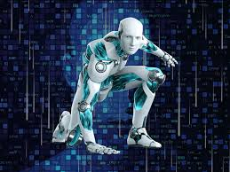

Los robots humanoides son máquinas diseñadas para imitar la apariencia y comportamiento humano.
Los robots humanoides representan una de las áreas más avanzadas de la robótica moderna. Empresas como Tesla, Boston Dynamics y Figure AI desarrollan robots capaces de caminar, hablar y realizar tareas complejas. Estos robots pueden trabajar en fábricas, hospitales, hogares y centros de investigación.
